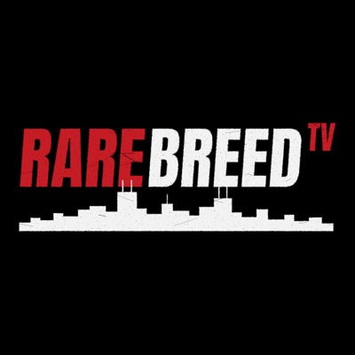

Rare Breed TV (RareBreed TV): 4K IPTV Setup, App and Plans
Rare Breed TV is an independent 4K IPTV service launched in 2026 for viewers in the USA: 25,000+ live channels, live sports and 120,000+ movies and series on Fire Stick, Android TV, smart TVs and phones, 1 to 5 devices at once. Plans start at $14 with one payment, login by email in minutes and a 7-day money-back.
Set up Rare Breed TV on a Fire Stick
- Turn on apps from unknown sources in the Fire TV developer options.
- Install Downloader from the Amazon store.
- Use Downloader to install IPTV Smarters Pro or TiviMate.
- Sign in with the Xtream Codes login you receive by email.
Which app works with Rare Breed TV
Any player that accepts an Xtream Codes or M3U login: IPTV Smarters Pro, TiviMate, Smart IPTV and MAG portals. There is no separate store app to look for – see the device-by-device list.
What happened to the old Rare Breed TV
A different service with the same name, run from Tarboro, North Carolina, closed in August 2025 after a settlement with ACE. Its logins, its app and its phone line no longer work, and rarebreed-tv.com is not connected to it. The timeline and sources are in the Rare Breed TV piracy shutdown explainer, and the legal question is answered in Is Rare Breed TV legal?